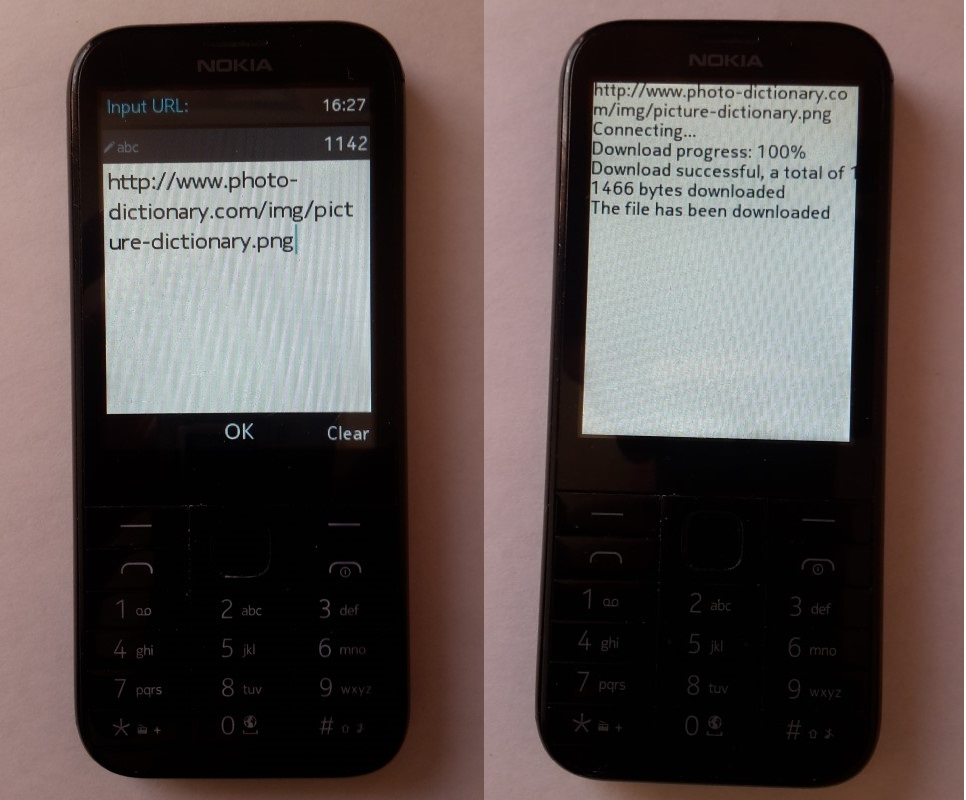

App demonstrate how to download file using http protocol. File save to storage card (E:\). LEFT_SOFTKEY - stop download, RIGHT_SOFTKEY - exit app. For using with Nokia mobile phone, app must be signed with IMSI (your SIM card) code. https://vxpatch.luxferre.top. Application file - "mre_http_get.vxp"
